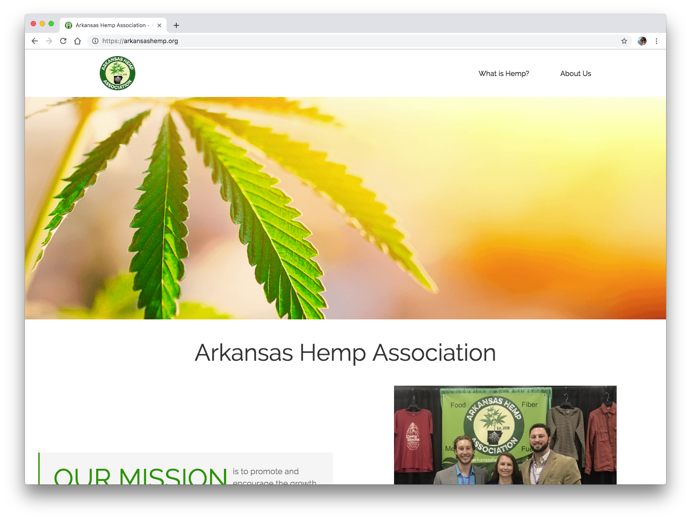

This is a showcase of some of the work I'm most proud of. Like a lot of designers and developers, much of my day-to-day work is covered by NDAs. I've built websites for freelance and pro bono clients, and explored the possibilities of HTML and CSS with CodePen doodles. I'm passionate about building beautiful, accessible, responsive websites that breathe life into the design vision.
Professional
Arkansas Museum of Fine Arts (Arkansas Arts Center)
Managed launch of the organization's brand new website from the ground up, featuring the organization's first fully responsive design, an integrated searchable and sortable calendar of event listings, and robust SEO.
Achieved over 31,000 pageviews in first month post-launch, surpassing initial goal of 10,000 by March.
Coordinated integrations of Tessitura, Shopify, and digital gallery platforms into new site.
Design: Icon pack for fleet management company, agency t-shirt, mobile-first responsive websites, Android apps for mobile devices and in-car equipment
Work Experience:
Developed process for design team to increase communication and accountability between all stakeholders and project teams from kickoff to delivery.
Designed mobile app to gamify onboarding process for new hires.
Designed responsive website for heavy machinery fleet management tracking and scheduling.
Jumped into .NET project without prior experience in that platform and used HTML and CSS to improve site implementation from “good enough” to pixel-perfect despite a major time crunch.
Client Industries: Healthcare and Telehealth, Heavy Equiptment Fleet Management, Connected Vehicle Navigation and Entertainment, Internet of Things
Arkansas Hemp Association
2019

Tech: WordPress, CSS, HTML
Design: Using the client's existing logo to create the brand identity, I created this web presence from scratch. I pulled colors from the logo to use throughout the site, repeated the circular motif, and found crisp, bright images to reflect the dawn of a new era in agriculture.
Goal: To serve as a resource for advocates, growers, processers, and businesses to network and share knowledge, as well as to educate the public about this newly-legalized crop.
Design: The client wanted a fresh design of their old website, and to prominently feature their new logo. To keep the design recognizably consistent with their previous site, I used their iconic goldenrod yellow as decoration and highlight, and reused elements like the round logo and split header navigation.
Goal: To overhaul design of website, introduce new features including event registration and ticketing, and focus on building an easily maintainable, accessible, and functional website for client-facing elements and user-facing front end.
Design: Originally built this as a PDF document, I focused on clean lines, clear separation, and a pop of one of my favorite colors. Although my most recent resume does not follow this format, it remains my favorite for it's strong columns and clear presentation of my skills and experience.
Goal: To recreate my favorite résumé as a responsive, mobile first, accessible website while learning BEM and SMACSS and applying knowledge of CSS flexbox